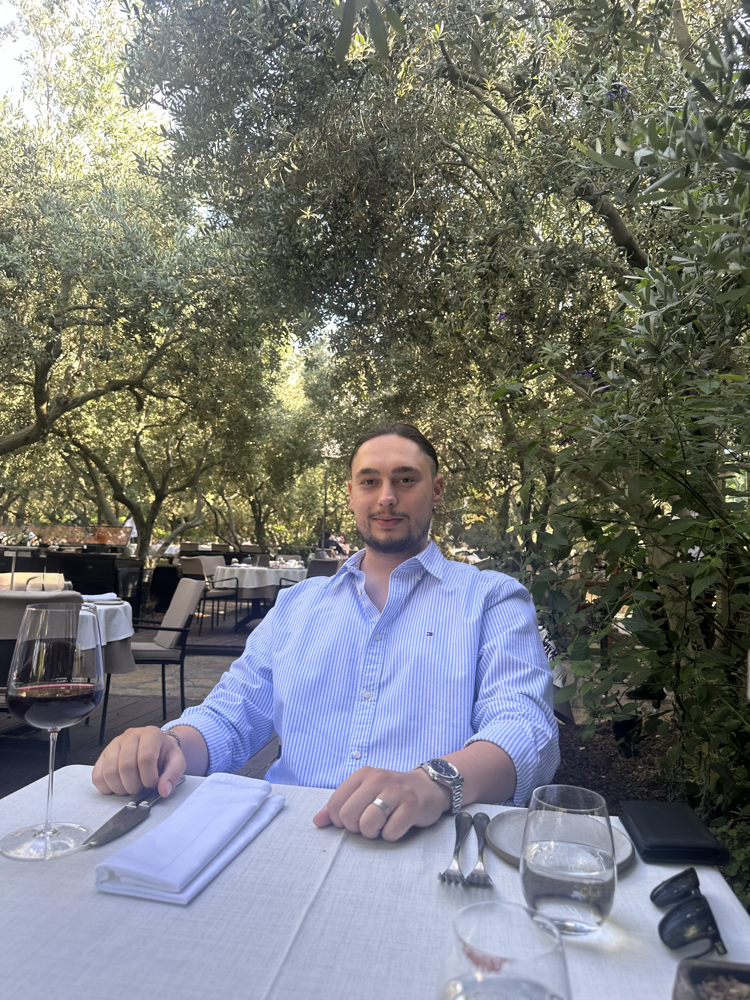

Onur Dogan
Machine Learning Engineer at Lifemote
About
I am a Machine Learning Engineer at Lifemote, where I develop AI solutions for telecommunications analytics. I work across the full MLOps lifecycle, from data and model training to deployment, working with LLMs, multimodal models, and time-series models. My work includes productionizing scalable LLM/ML pipelines on AWS and orchestrating large-scale inference.
I completed my MSc in Computer Science and Engineering at Sabancı University under the supervision of Öznur Taştan and Mehmet Keleş from Johns Hopkins University. My thesis, CoFINE: Hierarchy-Aware Semi-Supervised Learning for Fine-Grained Behavioral Classification, focused on learning from limited labelled data in fine-grained and hierarchical classification settings.
Before Lifemote, I worked on computer vision for robotics, with a focus on robotic perception. My work included real-time segmentation, automated data annotation, simulation-based data collection with NVIDIA Isaac Sim, and building perception pipelines for real-world robotic systems.
I also have a research background in computational biology, where I worked on graph and ML methods for RNA-seq, single-cell RNA-seq, and protein sequence data.
My experience spans computer vision, multimodal learning, time-series modelling, LLMs, and production ML systems. I am especially interested in building reliable learning systems and developing methods that make AI systems more robust, adaptive, and trustworthy in real-world settings.
Experience
Develop end-to-end AI solutions for telecommunications analytics.
Worked on real-time segmentation and assisted labeling for a robotics perception stack.
Contributed to the open-source NLU library and to Spark NLP for Healthcare.
Built and deployed a document information extraction service into the production pipeline.
Research Experience
Hierarchy-aware semi-supervised learning, and NLP applications in computational biology under supervision of Assoc. Prof. Oznur Tastan.
Single-cell RNA-seq integration and gene co-expression networks under supervision of Prof. Hilal Kazan.
Publications
O. Doğan, Ö. H. Batum, A. Sönmez, B. Yılmaz — IEEE BalkanCom
A. Houdjedj, Y. Marouf, M. Myradov, S. O. Doğan et al. — BMC Bioinformatics
M. U. Kahraman*, S. O. Doğan* et al. — New Design Ideas
Y. Marouf, S. O. Doğan et al. — presented at ERA-CVD and HIBIT
Projects
Predicting when vision-language-action models are likely to fail in robotic decision-making.
Graph neural networks over transaction graphs, for the Scalable Learning Systems course.
Surface defect detection that transfers to material types it wasn't trained on.